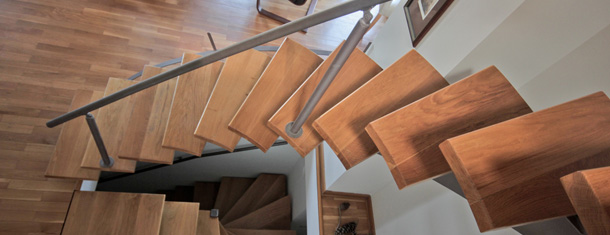

O nama
Monter je osnovan 1994. i od tada smo lideri u prizvodnji enterijerskih stepeništa na prostorima bivše Jugoslavije.
Danas naše iskustvo i stručnost omogućava nam da ispunimo sve zahteve vezane za stepeništa. U dodatku enterijerskog dizajna stepeništa nudimo: ograde, galerije, mostiće, spoljašnja stepeništa i oblaganje betonskih stepeništa.
Naša želja
Želja nam je da pomognemo ljudima da im bude što prijatnije i jednostavnije u udobnosti njihovog doma, a te stvari su neophodan i kljucni sastojak modernog načina zivota.
Ideali kojima težimo
Naš osnovni ideal je elegantnost i to je razlog zbog kojega se naši proizvodi uklopaju u svaki stan. Sastavni deo elegantnosti je i ekonomičnost, a ona Vam omogućava da nesmetano funkcionišete u svom stanu bez gubitka vremena.
Mi volimo naš posao, i to je razlog zbog koga dajemo sve od sebe da bi stvorili proizvode najvišeg kvaliteta.
Uvek se trudimo da damo maksimum da bi ispunili Vase željei zarad toga mi se susrećemo s preprekama i prevazilazimo ih, uvek smo spremni da preuzmemo rizik kako bi kao rezultat dobili kvalitetniji proizvod.
Uvek dostavljamo nase proizvode visokog kvaliteta u dogovorenom roku bez kašnjenja.
Inovacije
Investirali smo u nove ideje i dizane mada mnogi od njih još nisu prevedeni u stvarnost.
Pozivamo svakoga ko misli da ima interesantne ideje da ih podeli sa nama. Nadamo se i isčekujemo da možemo ostvariti uspešnu saradnju.